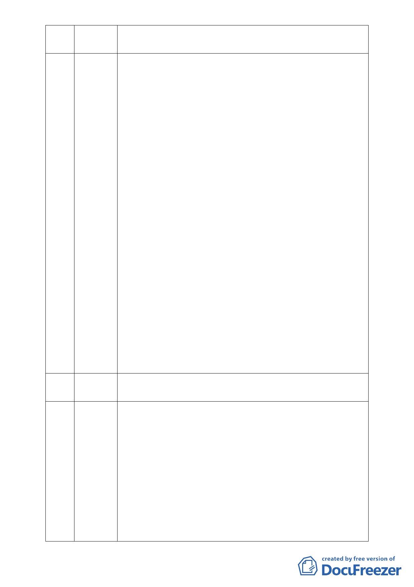

造一個所缺乏的滯洪、防洪池，這將是一個雙贏的局面，除了造福
居民又可提升國際形象。
11 嚴麗珠 代表內湖區里長聯誼會會長陳尤雪提出陳情函如下：
案由：為改善大湖周邊環境、美化市容，讓土地利用合理化，並為此提
昇國際聲譽，敬請同意慈濟內湖園區變更為社會福利專用區，並依現況
合法使用，早日地盡其利，發揮社會福利多項功能，嘉惠內湖居民。
說明：
ㄧ、慈濟內湖園區過去在臺灣各地，甚至全世界飽受風災、水災肆虐時，
充分發揮其政府所不能及的救援功能，其餘如醫療、教育、環保回
收、毛毯製作、熟食供應、志工服務、訓練、法會祈福等，一
一烙印在國人心中，然其土地分區、房屋倉庫，一直未能在政府的
協助下合理、合法使用。慈濟內湖園區這塊比其隔鄰的山坡建地還
要平坦，且歷經多年颱風、大雨侵襲下，均未曾絲毫造成附近區域
積水、山崩，政府難道不應為其正名。
二、據悉慈濟內湖園區都市計畫變更案，早在臺灣大學水工所專家
水理模擬和論證後，確定依慈濟所提計畫建設，會比保持現狀還
好。慈濟案也已通過市政府敦聘的多位水土保持專家多年多次的審查，
以及市政府水土保持、交通、都市計畫、新建工程、財政等等
相關權責部門的審議完成，且經內湖區大多數民眾、內湖區在地里
37 位里長一致表達支持建設的立場，亟盼市長能讓本案儘快通過，以改
善大湖周邊環境、美化市容、提昇國際聲譽。
三、在那麼多水保專家學者肯定慈濟內湖園區的建設會改善現況的
情形下，懇請市長能同意儘早讓慈濟內湖園區在市政府的監督下，合理
合法的運作，其所在土地合理的變更為社會福利專用區，以符合主流民
意的期待。
12 李萌熙 本人為大湖山莊總幹事，惟因大湖山莊也有反對的人，所以不是代
表大湖山莊，僅為此案提供幾張現況及淹水情形照片供委員參考。
13 張曉風 不論各位代表哪一個政黨，請以大家的利益作考量，早上打電話給
陳教授就教於此案的意見時，陳教授也主張本案地質應依循保護區
之相關規定，並稱都委會委員非政府下棋用的棋子，希望學者本身
有自己的意見才對。本案地名古稱「十四分陂」，即是沼澤地、集水
區的意思，它可以作水田可是不能作其他的功能，而且它又有順向
坡的問題，也或許是姓名學上的樂觀，因為市長為郝龍斌，龍應該
懂得水紋與如何治水才對，希望不要違反大自然的道理，且慈濟的
濟字是渡過一條河的意思，也是讓人在水上的世界能獲致得救的意
思，其發言人何日陞先生的陞字也是有從土地裡有植物生發出來的
意思，總之都是希望能維持大自然的生態。
- 12 -